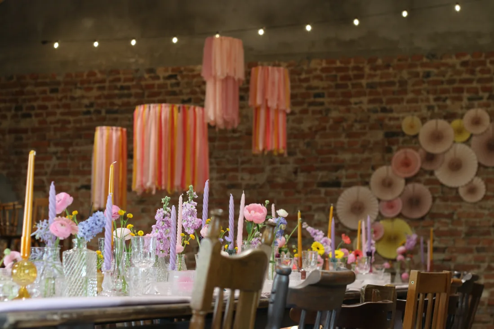
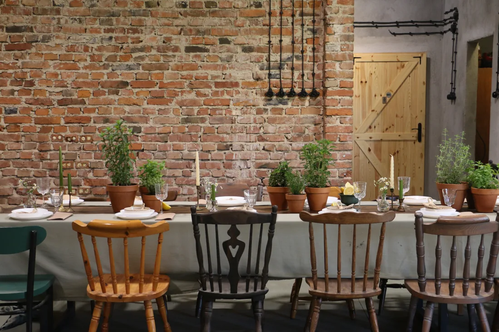

WESELA I PRZYJĘCIA POD PŁOCKIEM
Długi stół.
Bliscy ludzie.
Stara cegła, kwiaty na stołach i czas na bycie razem.
Zapraszamy do Stodoły Goślice 15.
STODOŁA GOŚLICE 15
Nie wszystkie krzesła
są z tej samej bajki.
I dobrze. Lubimy rzeczy z historią: stare meble, kryształy i książki, których ktoś nie chciał już zatrzymać. W Goślicach znalazły swoje miejsce. Teraz spotykają się tu ludzie.
Przyjęcia organizujemy od 2022 roku. Ceglasta stodoła i dom z 1937 roku tworzą przestrzeń na wesele, rodzinne świętowanie albo kilka spokojnych dni poza miastem.
Poznaj Agatę i Andrzeja


PRZYJĘCIA W STODOLE
Na wesele.
Na rodzinne święto.
Ślub w plenerze i przyjęcie w stodole. Chrzciny, komunia, urodziny albo spotkanie firmowe. Opowiedz nam o okazji, a wspólnie ustalimy szczegóły.
Przygotowujemy menu klasyczne, wegetariańskie i wegańskie.
Zobacz możliwościDOM Z 1937 ROKU
Zostań
trochę dłużej.
Pomarańczowe fotele, stare meble i wieczory przy kominku. Obok stodoły czeka dom dla ośmiu osób, z ogrodem, tarasem i małym sadem.
Możesz wynająć go przy okazji przyjęcia albo przyjechać tylko na odpoczynek.
Zajrzyj do domu

Z BLISKA
Tak jest w Goślicach.


ZAPRASZAMY DO GOŚLIC
Najpierw przyjedź.
Poczuj to miejsce.
Porozmawiajmy o dacie, liczbie gości i tym, jak chcesz świętować.
Umów obejrzenie miejsca